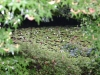
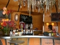
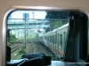
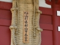
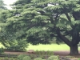
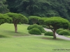
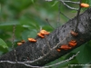
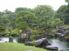
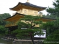

Япония
Japan
Възстановени са 20 миниатюри. Пълните файлове не са запазени в архива.
20 thumbnails survived. The full-size files did not.

A great collection
The love of everything French is a soft spot in Tokyotes' hearts

Inside the Forbidden Fruit


The monk's flip-flop (as a monument)
Prada building on Omotesando Street


Japanese garden
A group of young homosexuals on the road to the shrine

The quintessential takoyaki place


Kikanku-Ji (The Golden Shrine)